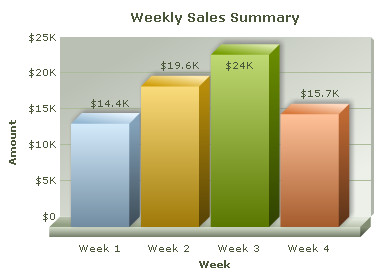

| Providing and updating chart data | ||||
|
FusionCharts JavaScript classes offer a number of functions for providing data to chart and updating chart data. FusionCharts JavaScript class supports data in XML or JSON format. The data can be assigned as URL or as String. In this page we will discuss how to provide data to a chart at the time of rendering or updating. Code examples discussed in this section are present in Download Package > Code > JavaScript > Basics folder. |
||||
| Providing data to chart | ||||
|
You can provide data to the chart using various methods as shown below : Using XML file as the chart's data source <html>
<head>
<title>My First chart using FusionCharts XT</title>
<script type="text/javascript" src="FusionCharts/FusionCharts.js">
</script>
</head>
<body>
<div id="chartContainer">FusionCharts XT will load here!</div>
<script type="text/javascript"><!--
var myChart = new FusionCharts( "FusionCharts/Column3D.swf",
"myChartId", "400", "300", "0", "1" );
myChart.setXMLUrl("Data.xml");
myChart.render("chartContainer");
// -->
</script>
</body>
</html>
 In the above code, chart data is provided through an external XML file whose URL is provided using setXMLUrl() function. Click here to see implementation of other functions that do the same »
myChart.setChartData("Data.xml" , "xmlurl");
...
myChart.setChartDataUrl("Data.xml" , "xml");
Using XML String as the chart data source In case you have XML data as String in JavaScript, you can use setXMLData() function to provide this XML String as shown in the code below: // String containing chart XML var strXML = ""<chart><set value='100' label='Week 1'/>...</chart>""; myChart.setXMLData(strXML); Click here to see implementation of other functions that do the same » myChart.setChartData(strXML , "xml"); Using JSON URL as the chart data source In case you are feeding JSON data to the chart from a URL, you can use setJSONUrl() function. See code below: myChart.setJSONUrl("Data.json");
Click here to see implementation of other functions that do the same » myChart.setChartData("Data.json" , "jsonurl");
...
myChart.setChartDataUrl("Data.json" , "json");
Using JSON Object or JSON stored as String in JavaScript In case you are using JSON Object or JSON as String to be fed to chart, you can use setJSONData() function. See code below: var objJSON = { chart : { ... } , data : { ... } ... } ; // Chart JSON data
myChart.setJSONData( objJSON );
var strJSON = "{ chart : { ... } , data : { ... } ... }" ; // chart data as JSON String
myChart.setJSONData( strJSON );
Click here to see implementation of other functions that do the same » myChart.setChartData(objJSON , "json"); ... myChart.setChartData(strJSON , "json"); The code samples here use URL of static XML/JSON files. Ideally, you will be using Server-side scripts to dynamically generate XML or JSON data, rather than build JSON or XML files. So, you can provide the URL of the script, which relays dynamically generated data to the chart. List of functions that help in providing data to chart Here is the list of FusionCharts JavaScript functions which can be used for providing data to the chart in XML or JSON format:
|
||||
| While using HTTPS/SSL protocols it is not recommended to use setDataURL() function. | ||||
|
Providing chart data using compact rendering method Apart from the above mentioned functions, data can be provided to the chart using compact rendering method. Using this method you can pass your data as XML/JSON URL or String. All you need to do is provide the settings correctly. The code snippets below shows how to use the compact rendering mode: Using XML file as the chart data source var myChart = FusionCharts.render( "FusionCharts/Column3D.swf", "myChartId", "400", "300", "ChartContainer", "Data.xml" , "xmlurl" ); See it live! Using JSON file as the chart data source var myChart = FusionCharts.render( "FusionCharts/Column3D.swf", "myChartId", "400", "300", "ChartContainer", "Data.json" , "jsonurl" ); See it live! Using XML String as the chart data source var myChart = FusionCharts.render( "FusionCharts/Column3D.swf", "myChartId", "400", "300", "ChartContainer", strXML , "xml" ); See it live! Using JSON Object as the chart data source var objJSON = { chart : { ... } , data : { ... } ... } ; // chart data as JSON object
var myChart = FusionCharts.render( "FusionCharts/Column3D.swf", "myChartId",
"400", "300", "ChartContainer", objJSON , "json" );
See it live! Using JSON String as the chart data source var strJSON = "{ chart : { ... } , data : { ... } ... }" ; // chart data as JSON String
var myChart = FusionCharts.render( "FusionCharts/Column3D.swf", "myChartId",
"400", "300", "ChartContainer", strJSON , "json" );
See it live! For more information on compact rendering mode read Constructor methods. |
||||
| Updating an existing chart | ||||
|
Let us render a sample chart and then change its data (see code below). The chart which renders initially shows sales data for the Month of August. However, its data is changed to show sales for the month of September when a button is clicked. We have separate XML files for each month, the code is as follows: <html>
<head>
<title>Update Chart data</title>
<script type="text/javascript" src="../../FusionCharts/FusionCharts.js">
</script>
</head>
<body>
<div id="chartContainer">FusionCharts XT will load here!</div>
<script type="text/javascript"><!--
var myChart = new FusionCharts( "../../FusionCharts/Column3D.swf",
"myChartId", "400", "300", "0", "1" );
myChart.setXMLUrl("AugustData.xml");
myChart.render("chartContainer");
function changeMonth()
{
var chartReference = FusionCharts("myChartId");
chartReference.setXMLUrl("SeptemberData.xml");
}
// -->
</script>
<input type="button" onClick="changeMonth();" value="Change Month">
</body>
</html>
In the above code we have created a chart using data for the month of August, the data for which is in AugustData.xml. We have created an HTML button which calls a JavaScript function changeMonth(). In this function we have :
The charts will look as follows:
See it live! |
||||
|
Other Methods of updating chart data
To update an existing chart with data, all you need to do is get the chart reference and a function from the list provided above. All of the functions listed above can then be used for updating the data of an existing chart. Following code snippets illustrate the process: var chartReference = FusionCharts("myChartId");
chartReference.setXMLUrl("newData.xml");
var chartReference = FusionCharts("myChartId");
chartReference.setJSONUrl("updatedJSON.json");
var chartReference = FusionCharts.items["myChartId"];
chartReference.setXMLData(newXMLString);
//newXMLString is a JavaScript String variable containing the chart XML
var chartReference = FusionCharts.items["myChartId"];
chartReference.setJSONData(objJSON);
//objJSON is an Object containing chart JSON
var chartReference = FusionCharts.items["myChartId"];
chartReference.setJSONData(strJSON);
//strJSON is a String which contains chart JSON
Click here to see implementation of other similar functions » var chartReference = FusionCharts.items["myChartId"];
...
chartReference.setChartDataUrl("updatedXML.xml", "xml");
...
chartReference.setChartDataUrl("updatedJSON.json", "json");
...
chartReference.setChartData("updatedXML.xml", "xmlurl");
...
chartReference.setChartData("updatedJSON.json", "jsonurl");
...
chartReference.setChartData(strXML, "xml");
...
chartReference.setChartData(objJSON, "json");
...
chartReference.setChartData(strJSON, "json");
Deprecated Functions myChart.setDataURL("newData.xml");
var chartReference = getChartFromId("myChartId");
chartReference.setDataXML(newXMLString);
//newXMLString is a JavaScript String variable containing the chart XML
var chartReference = FusionCharts.getObjectReference("myChartId");
chartReference.setDataURL("newData.xml");
myChart.setDataXML(newXMLString); //new XMLString is a string containing chart XML |
||||
| Please note that only setDataXML() and setDataURL() functions will work if you get reference to chart's HTML Object reference instead of its JavaScript object reference. If you get the chart's JavaScript Object reference, you can use all the functions listed above. | ||||
| Notes on Backward compatibility | ||||
Your existing code (that is, pre V3.2 code) will continue to work as before. |